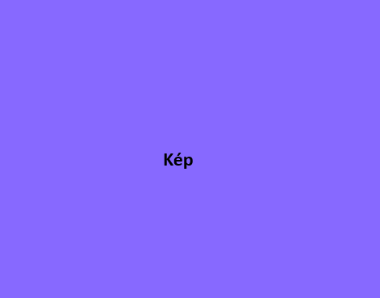
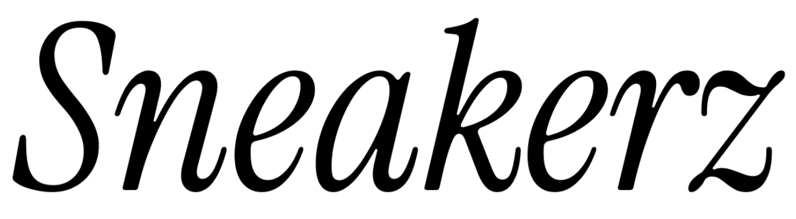

Bemutatkozás
Szoftverfejlesztő és tesztelő tanuló vagyok, aki szeret programozással és webfejlesztéssel foglalkozni. Tanulmányaim során többféle projektet készítettem, az egyszerűbb weboldalaktól kezdve egészen önálló alkalmazásokig.
HTML, CSS, JavaScript és C# technológiákkal dolgoztam, és több projekt során is megtapasztaltam, milyen csapatban és önállóan fejleszteni. Szeretek új technológiákat kipróbálni, problémákat megoldani, és a projektek során megszerzett tapasztalatokból folyamatosan fejlődni. A jövőben szeretném tovább bővíteni a tudásomat, és minél több érdekes, kreatív projektet megvalósítani.

Készségek


Projektek

A Sneakers projektet 10 osztályban készítettük IKT-ra csapatban. Az alapötletben csak statikus HTML + CSS lett volna, de a sok oldal miatt egy json-ból töltöttük be az adatokat.

Aknakereső
Az aknakeresőt alapjait egyedül csináltam aztán csapatban fejeztük be. A program C# .NET WinFormsApp keretrendszerben készült és a google aknakeresőjéről mintáztuk.
LANChat
A LANChat-et egyedül készítettem egy chatprogramnak. Webre windows-ra és androidra is fejlesztettem belőle verziót

Kapcsolat
- Tel.: +36 123 4567
-
E-mail: adolfaron@turr.hu
- Lakhely: Baja